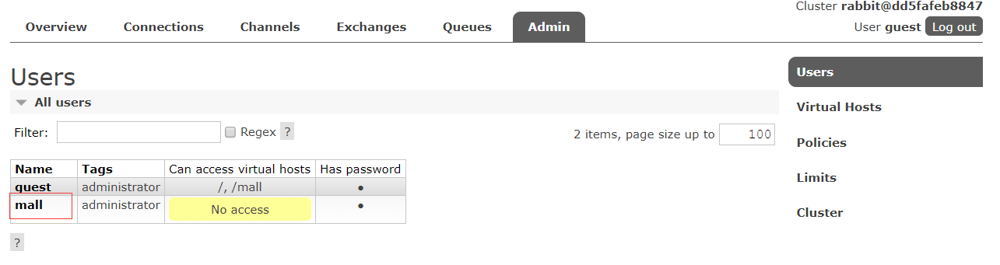

Docker环境安装
安装yum-utils:
1
yum install -y yum-utils device-mapper-persistent-data lvm2
为yum源添加docker仓库位置：
1
yum-config-manager --add-repo https://download.docker.com/linux/centos/docker-ce.repo
安装docker：
1
yum install docker-ce
启动docker：
1
systemctl start docker
Mysql安装
下载mysql5.7的docker镜像：
1
docker pull mysql:5.7
使用docker命令启动：
1
2
3
4
5
6docker run -p 3306:3306 --name mysql \
-v /mydata/mysql/log:/var/log/mysql \
-v /mydata/mysql/data:/var/lib/mysql \
-v /mydata/mysql/conf:/etc/mysql \
-e MYSQL_ROOT_PASSWORD=root \
-d mysql:5.7参数说明
- -p 3306:3306：将容器的3306端口映射到主机的3306端口
- -v /mydata/mysql/conf:/etc/mysql：将配置文件夹挂在到主机
- -v /mydata/mysql/log:/var/log/mysql：将日志文件夹挂载到主机
- -v /mydata/mysql/data:/var/lib/mysql/：将数据文件夹挂载到主机
- -e MYSQL_ROOT_PASSWORD=root：初始化root用户的密码
进入运行mysql的docker容器：
1
docker exec -it mysql /bin/bash
使用mysql命令打开客户端：
1
mysql -uroot -proot --default-character-set=utf8
创建mall数据库：
1
create database mall character set utf8
安装上传下载插件，并将docment/sql/mall.sql上传到Linux服务器上：
1
yum -y install lrzsz
将mall.sql文件拷贝到mysql容器的/目录下：
1
docker cp /mydata/mall.sql mysql:/
将sql文件导入到数据库：
1
2use mall;
source /mall.sql;创建一个reader帐号并修改权限，使得任何ip都能访问：
1
grant all privileges on *.* to 'reader' @'%' identified by '123456';
Redis安装
下载redis3.2的docker镜像：
1
docker pull redis:3.2
使用docker命令启动：
1
2
3docker run -p 6379:6379 --name redis \
-v /mydata/redis/data:/data \
-d redis:3.2 redis-server --appendonly yes进入redis容器使用redis-cli命令进行连接：
1
docker exec -it redis redis-cli

Nginx安装
下载nginx1.10的docker镜像：
1
docker pull nginx:1.10
从容器中拷贝nginx配置
先运行一次容器（为了拷贝配置文件）：
1
2
3
4docker run -p 80:80 --name nginx \
-v /mydata/nginx/html:/usr/share/nginx/html \
-v /mydata/nginx/logs:/var/log/nginx \
-d nginx:1.10将容器内的配置文件拷贝到指定目录：
1
docker container cp nginx:/etc/nginx /mydata/nginx/
修改文件名称：
1
mv nginx conf


- 终止并删除容器：
1
2docker stop nginx
docker rm nginx
使用docker命令启动：
1
2
3
4
5
6
7
8
9
10
11
12docker run -p 80:80 --name nginx \
-v /mydata/nginx/html:/usr/share/nginx/html \
-v /mydata/nginx/logs:/var/log/nginx \
-v /mydata/nginx/conf:/etc/nginx \
-d nginx:1.10
```
## RabbitMQ安装
* 下载rabbitmq3.7.15的docker镜像：
```text
docker pull rabbitmq:3.7.15使用docker命令启动：
1
2
3
4docker run -d --name rabbitmq \
--publish 5671:5671 --publish 5672:5672 --publish 4369:4369 \
--publish 25672:25672 --publish 15671:15671 --publish 15672:15672 \
rabbitmq:3.7.15进入容器并开启管理功能：
1
2docker exec -it rabbitmq /bin/bash
rabbitmq-plugins enable rabbitmq_management
- 开启防火墙：
1
2firewall-cmd --zone=public --add-port=15672/tcp --permanent
firewall-cmd --reload

- 访问地址查看是否安装成功：http://106.14.146.164:15672/
- 输入账号密码并登录：guest guest
创建帐号并设置其角色为管理员：mall mall

创建一个新的虚拟host为：/mall

点击mall用户进入用户配置页面
给mall用户配置该虚拟host的权限

Elasticsearch安装
下载elasticsearch6.4.0的docker镜像：
1
docker pull elasticsearch:6.4.0
修改虚拟内存区域大小，否则会因为过小而无法启动:
1
sysctl -w vm.max_map_count=262144
使用docker命令启动：
1
2
3
4
5
6
7docker run -p 9200:9200 -p 9300:9300 --name elasticsearch \
-e "ES_JAVA_OPTS=-Xms256m -Xmx256m" \
-e "discovery.type=single-node" \
-e "cluster.name=elasticsearch" \
-v /mydata/elasticsearch/plugins:/usr/share/elasticsearch/plugins \
-v /mydata/elasticsearch/data:/usr/share/elasticsearch/data \
-d elasticsearch:6.4.0启动时会发现/usr/share/elasticsearch/data目录没有访问权限，只需要修改/mydata/elasticsearch/data目录的权限，再重新启动。
1
chmod 777 /mydata/elasticsearch/data/
安装中文分词器IKAnalyzer，并重新启动：
1
2
3
4docker exec -it elasticsearch /bin/bash
#此命令需要在容器中运行
elasticsearch-plugin install https://github.com/medcl/elasticsearch-analysis-ik/releases/download/v6.4.0/elasticsearch-analysis-ik-6.4.0.zip
docker restart elasticsearch开启防火墙：
1
2firewall-cmd --zone=public --add-port=9200/tcp --permanent
firewall-cmd --reload

kibana安装
下载kibana6.4.0的docker镜像：
1
docker pull kibana:6.4.0
使用docker命令启动：
1
2
3
4docker run --name kibana -p 5601:5601 \
--link elasticsearch:es \
-e "elasticsearch.hosts=http://106.14.146.164:9200" \
-d kibana:6.4.0开启防火墙：
1
2firewall-cmd --zone=public --add-port=5601/tcp --permanent
firewall-cmd --reload
Mongodb安装
下载mongo3.2的docker镜像：
1
docker pull mongo:3.2
使用docker命令启动：
1
2
3docker run -p 27017:27017 --name mongo \
-v /mydata/mongo/db:/data/db \
-d mongo:3.2
至此docker全部环境安装完成

使用docker-maven-plugin插件构建docker镜像
Dockerfile方式构建
- 配置本机DOCKER_HOST环境变量

- pom配置
1
2
3
4
5
6
7
8
9
10
11
12
13
14
15
16
17
18
19
20
21
22
23
24
25
26
27
28
29
30
31
32
33
34<build>
<plugins>
<plugin>
<groupId>org.springframework.boot</groupId>
<artifactId>spring-boot-maven-plugin</artifactId>
</plugin>
<plugin>
<groupId>com.spotify</groupId>
<artifactId>docker-maven-plugin</artifactId>
<version>${docker.maven.plugin.version}</version>
<executions>
<execution>
<id>build-image</id>
<phase>package</phase>
<goals>
<goal>build</goal>
</goals>
</execution>
</executions>
<configuration>
<imageName>superm/${project.artifactId}:${project.version}</imageName>
<dockerHost>${docker.host}</dockerHost>
<dockerDirectory>${project.basedir}/src/main/docker</dockerDirectory>
<resources>
<resource>
<targetPath>/</targetPath>
<directory>${project.build.directory}</directory>
<include>${project.build.finalName}.jar</include>
</resource>
</resources>
</configuration>
</plugin>
</plugins>
</build>
3.Dockerfile配置
1
2
3
4
5
6
7
8
9
10
11
12# 该镜像需要依赖的基础镜像
FROM java:8
# 将当前目录下的jar包复制到docker容器的/目录下
ADD superm-admin-1.0-SNAPSHOT.jar /superm-admin.jar
# 运行过程中创建一个superm-admin.jar文件
RUN bash -c 'touch /superm-admin.jar'
# 声明服务运行在8080端口
EXPOSE 8080
# 指定docker容器启动时运行jar包
ENTRYPOINT ["java", "-jar","/superm-admin.jar"]
# 指定维护者的名字
MAINTAINER xudongye4.运行mvn打包指令

5.查看docker镜像
5.运行1
2
3
4
5
6
7docker run -p 8080:8080 \
--name superm-admin \
--link mysql:106.14.146.164 \
--link redis:106.14.146.164 \
-v /etc/localtime:/etc/localtime \
-v /mydata/app/admin/logs:/var/logs \
-d superm/superm-admin:1.0-SNAPSHOT- 配置本机DOCKER_HOST环境变量